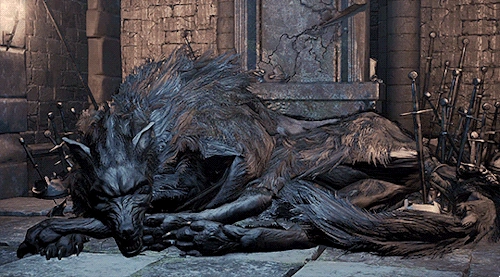

← Volver
← Volver
El Viejo Lobo de Farron es un NPC de Dark Souls III. Este lobo puede ser encontrado en el pantano del Fuerte de Farron, con Babosas Podridas protegiendo su base. El lobo es la cabeza del aquelarre Guardianes de Farron y le permite al jugador el unirse a sus filas. Cuando hablas con el por primera vez, te entrega un medallón. Como miembro del aquelarre, puedes recibir recompensas al entregarle Hierba Espada de Sangre de Lobo.
¿Dónde se puede encontrar al Viejo Lobo de Farron en Dark Souls III? Se lo puede encontrar en el Fuerte de Farron, subiendo una escalera que se encuentra en el soporte del puente masivo en los límites del pantano.

 ↑
↑